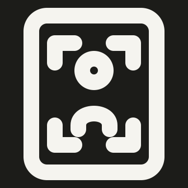
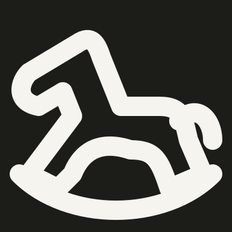

Keep clock hands visibly detached inside the round dial and retain the page caption. Local dial/hand and caption clearances are compact but remain open at 48 px.
solo/rectangle-single-man-focus
OriginalRejectedRevised

DarkNative 48 px
Rejected diagonal marks merge into the frame and the person becomes two small marks. Restore four independent right-angle focus brackets around a head and shoulder bust.
Four independent focus brackets, a person and a surrounding panel are all essential. The narrow but visible gaps preserve the complete composition with 4 px strokes.
solo/ribbon-gymnast-running
OriginalRejectedRevisedDarkNative 48 px
Rejected short hooked ribbon and angular limbs lose the flowing running action. Restore a waved ribbon, an aligned head, outstretched arms and bent running legs.
Retain running limbs and a flowing ribbon. The head/torso gap is analytically exactly 4 px; local limb and ribbon clearances retain the action at native size.
solo/right-facing-head-with-curled-breath-lines
OriginalRejectedRevisedDarkNative 48 px
Rejected face is an open C-shaped notch with disconnected wind dots. Restore the forehead, nose, lips, chin and neck, plus two continuous outward breath curls.
The nose, lips, chin and two curled breath strokes define the profile. Compact facial spacing and breath curls are intentional and visible in both themes.
solo/right-pointing-hand-with-lower-thumb
OriginalRejectedRevisedDarkNative 48 px
Rejected tight sawtooth knuckles obscure the folded fingers. Restore broad finger arcs and the downward thumb below the extended index.
Broad curled fingers and raised thumb preserve the pointing gesture. Residual internal finger-junction advisories are accepted without altering strokes or checker thresholds.
solo/right-profile-with-folded-brain
OriginalRejectedRevisedDarkNative 48 px
Rejected single inner blob loses brain folds and the head has an oversized angular nose. Restore a rounded skull and chin, a compact profile and recognizable lobed brain with folds.
A lobed brain, fold and brainstem must remain inside the human profile. The broad skull and compact brain-to-skull gap retain clear anatomy and an open internal brain shape.
solo/ringed-planet-beside-small-star
OriginalRejectedRevisedDarkNative 48 px
Rejected planet uses one slash and a solid X. Restore an elliptical orbit around a round planet and a pointed four-way sparkle.
The visible elliptical ring and four-point sparkle preserve Saturn-like planet identity. Ring/globe crossings and tiny pointed star opening are intentional silhouette details.
solo/ringed-planet-with-a-steep-tilt
OriginalRejectedRevisedDarkNative 48 px
Rejected orbital band is a thick diagonal slash. Restore a complete steeply tilted elliptical loop with visible front and rear lobes around the globe.
The full steep elliptical orbit preserves both orbital lobes around the globe. Local tapered spaces and subpixel envelope differences belong to the natural rotated geometry.
solo/riser
OriginalRejectedRevisedDarkNative 48 px
Rejected arrow is short and heavy inside the square. Restore the reference tall shaft and wider upward arrow, balanced within a softly rounded square.
Rejected bicycle has tiny wheels and a dense blocky frame. Restore two large thin-rim wheels, an open diamond frame, saddle and dropped road handlebar.
Two people and a broad curved-tip knife make the robbery scene explicit. The short knife-to-victim gap, 3 px blade opening and wider scene envelope are deliberate; head-to-torso gaps remain exactly 4 px.
solo/robot-gripper-holding-round-sample
OriginalRejectedRevisedDarkNative 48 px
Rejected angular claw has a tiny pivot and diagonal rod, losing the reference robot hand. Restore curved gripping jaws around the sample and a broad rounded wrist.
Curved jaws, sample and broad rounded wrist restore the robotic gripper. Feeding lines and compact jaw/wrist joins are intentional mechanical contacts.
solo/robot-hero-helmet
OriginalRejectedRevisedDarkNative 48 px
Rejected face is an M-shaped slit without eyes and the crest is a square tab. Restore a rounded helmet crest, ear pods, broad face opening and two eyes.
Retain helmet crest, ear pods, scalloped face opening and two eyes. Local shell/face contacts and compact eye clearances preserve the recognizable helmeted hero.
solo/rock-horns-hand-with-crossing-thumb
OriginalRejectedRevisedDarkNative 48 px
Rejected horns hand merges middle fingers into bumps and draws the thumb as a horizontal bar. Restore long index and little fingers, two folded knuckles, and a diagonally crossing thumb.
The two long raised fingers, folded middle knuckles and crossing thumb must remain. Compact inner finger gaps preserve the rock-horns hand pose.
solo/rocket-departing-planet
OriginalRejectedRevisedDarkNative 48 px
Rejected rocket and planet are loose hooks and bars. Restore the pointed rocket with fins, a detached exhaust flame and a round planet with an elliptical departure path.
Preserve an open round planet, distinct departing rocket, exhaust and swept trajectory. Small orbital pockets and compact flame spacing remain legible at 48 px.
solo/rocket-passing-above-a-globe
OriginalRejectedRevisedDarkNative 48 px
Rejected rocket loses its fins and the globe becomes a semicircular cross. Restore a diagonal finned rocket and a round lower globe with a continent contour.
A finned rocket and separate lower globe are both defining parts. Compact globe/continent opening and rocket-fin joints preserve the reference scene without dropping the planet.
solo/rockets-over-horizon
OriginalRejectedRevisedDarkNative 48 px
Rejected descending objects become angular shield-like symbols. Restore two rounded downward rockets with side fins, falling trails and a curved planetary horizon.
Two descending rockets require their outlined fins, falling trails and planetary horizon. The 2 px body and fin openings remain visible; broad envelope and close spacing preserve both rockets.
solo/rocking-horse
OriginalRejectedRevised

DarkNative 48 px
Rejected angular horse has a flat body and narrow head; the toy variant also has a flat sled base. Restore a rounded horse silhouette, arched belly and a visibly curved rocker.
The rounded muzzle, sloping neck, arched belly and curved rocker preserve the rocking horse. Tapered limb openings and rocker contact are deliberate, with a natural envelope.
solo/rocking-horse-toy
Current drawing fallbackRejectedRevisedDarkNative 48 px
Rejected angular horse has a flat body and narrow head; the toy variant also has a flat sled base. Restore a rounded horse silhouette, arched belly and a visibly curved rocker.
Replace the rejected flat sled with a curved rocker and a fuller horse body. Tapered limb openings and rocker contact retain the toy silhouette at UI size.